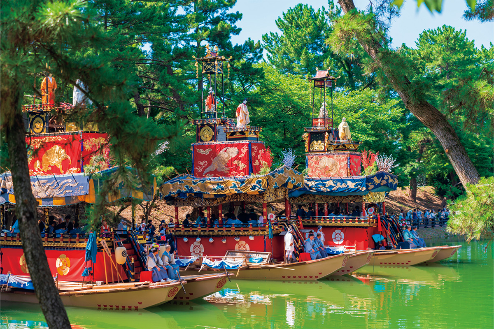
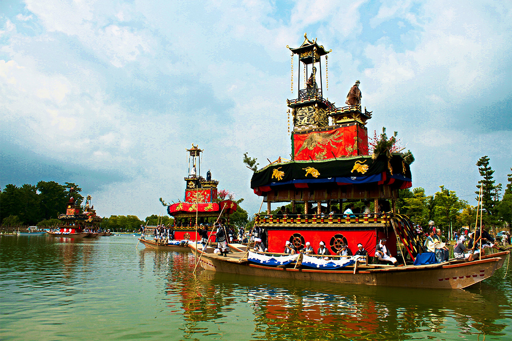
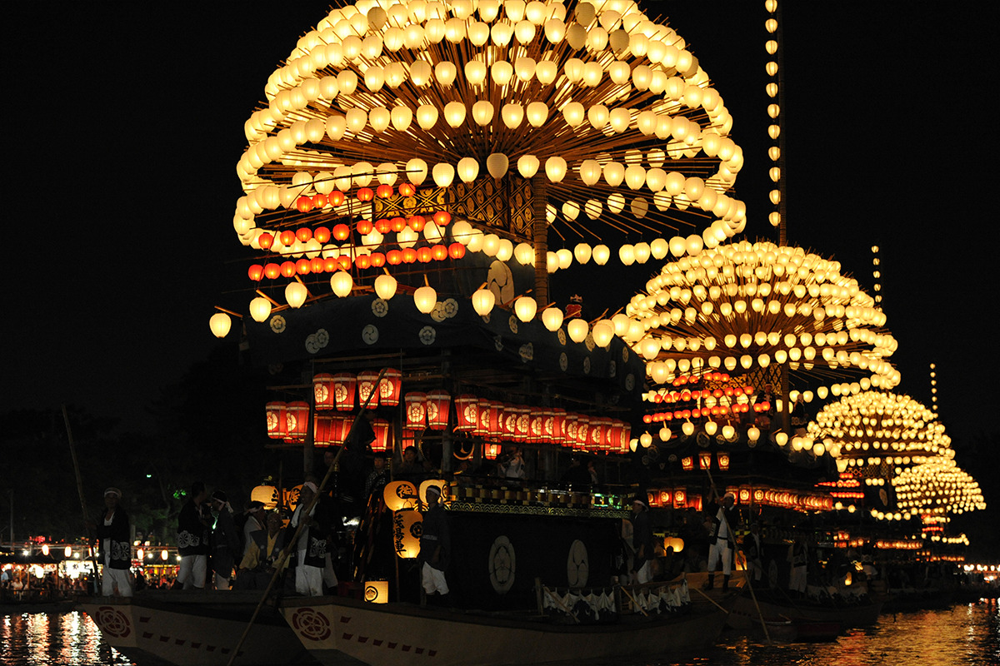
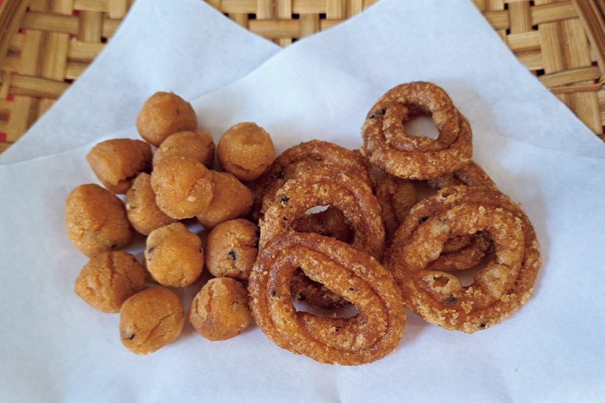

Префектура Айти · Цусима · праздник
Овари Цусима Тэнно-мацури: праздник на реке, где ночь светится фонарями, а утро сверкает парчой

Почти шестьсот лет город Цусима в префектуре Айти отмечает летний праздник на воде. Вечером по реке плывут лодки, увешанные сотнями фонарей, а наутро те же воды заполняют сверкающие парчой лодки, с которых люди прыгают прямо в пруд.
Праздник
Шестьсот лет у святилища Цусима
Святилище Цусима местные жители издавна ласково зовут «Цусима-но о-Тэнно-сама». Вместе с его историей почти шесть веков живёт и праздник Овари Цусима Тэнно-мацури. Его главная сцена это вода: всё действие разворачивается на реке Тэнно, в парке Тэнногава.
Праздник состоит из двух частей, и они совсем не похожи друг на друга. Вечером, на ёисай, праздничные лодки «макивара-бунэ» украшают фонарями, и они плывут к отабисё, временной остановке божества. В темноте негромко звучит праздничная музыка, и её стоит послушать отдельно.

Утром, на асамацури, на воду выходят нарядные лодки во главе с «Итиэ-гурума». На ней стоят хокомоти, люди с ритуальными алебардами. Один за другим они прыгают в пруд и плывут к отабисё. Тихая светящаяся ночь и яркое шумное утро: такого контраста больше нет ни на одном японском празднике.
Ёисай
Фонари над тёмной водой
Главное, ради чего едут в Цусиму, это вечерний праздник. Пять лодок несут по нескольку сотен фонарей, собранных в полукруглые купола, и медленно идут по реке Тэнно. Тёплый свет отражается в воде, и от этого зрелища захватывает дух. За него праздник причисляют к трём великим речным праздникам Японии.

Овари Цусима Тэнно-мацури
- Адрес
- префектура Айти, Цусима, святилище Цусима и парк Тэнногава
- Даты
- 25–26 июля 2026 года (праздник проходит в четвёртую субботу июля и на следующий день)
- Как добраться
- около 15 минут пешком от станции Цусима линии Мэйтэцу. На машине около 15 минут от развязки Ятоми скоростной дороги Хигаси-Мэйхан или около 30 минут от развязки Итиномия-Инадзава-Кита скоростной дороги Токай-Хокурику
Сладости
«Акада» и «куцува» от святилища
Побывав в Цусиме, стоит попробовать сладости, связанные со святилищем: «акада» и «куцува». Их продают в лавке «Акадая Сэйсити». Те же сладости делает и другой старый дом у святилища, о нём отдельная статья. Это рисовое печенье слывёт самым твёрдым лакомством в Японии, а вкус у него простой и немного ностальгический.

Фото: PIXTA.